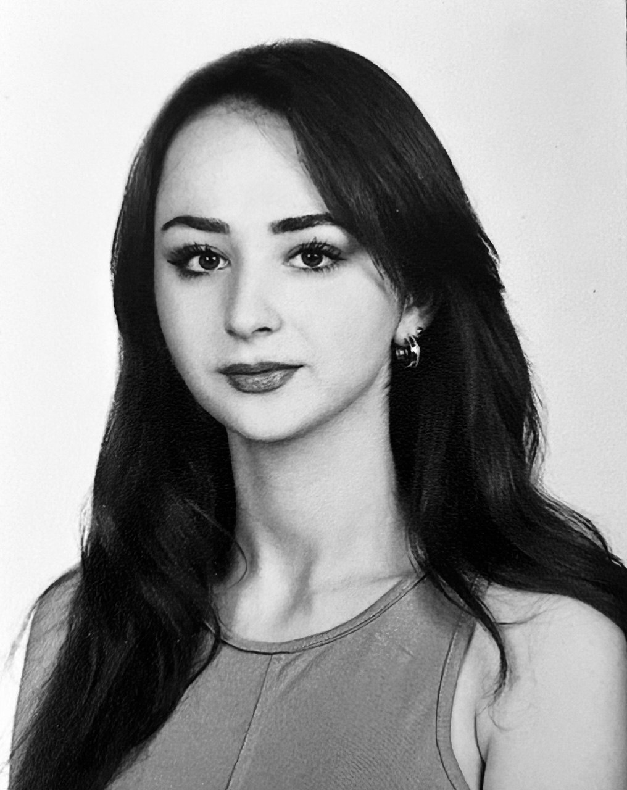

Editörlerimiz
EcoVision'ın değerli editör ekibi, iklim değişikliği ve sürdürülebilirlik konularında uzmanlaşmış deneyimli isimlerden oluşmaktadır.
Eylül Varlı
İklim Bilimci
Teknolojinin dönüştürücü gücünden ilham alarak, veri odaklı çözümler geliştirmeye ve kullanıcı deneyimini merkeze alan projeler üretmeye odaklanmaktadır...
Tuğçegül Ülker
Sürdürülebilirlik Uzmanı
Yeşil enerji ve sürdürülebilir kentleşme alanlarında projeler yürüten Tuğçegül Hanım, 8 ülkede danışmanlık yapmıştır...

Eda Nur Aydın
Proje Koordinatörü
Atık yönetimi ve geri dönüşüm sistemleri konusunda uzman olan Eda Nur Hanım, birçok belediyeye proje koordinatörlüğü yapmaktadır...